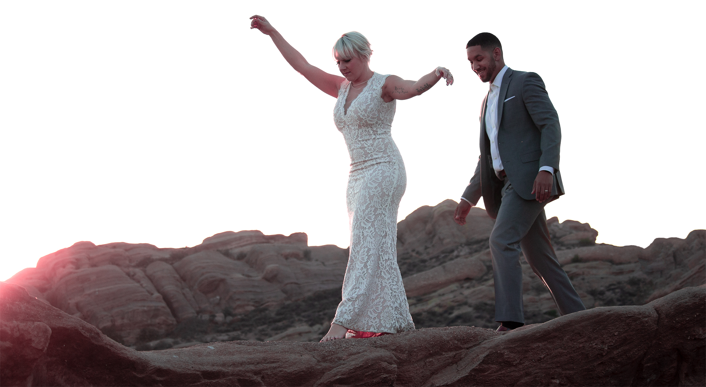
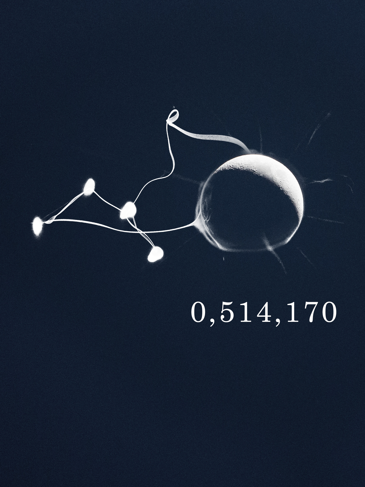
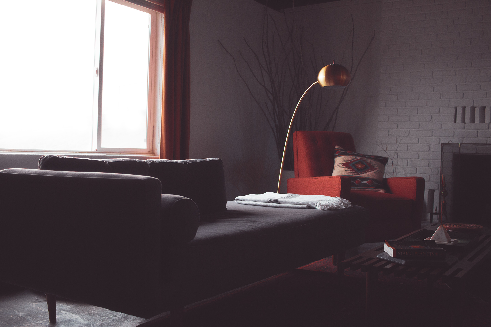
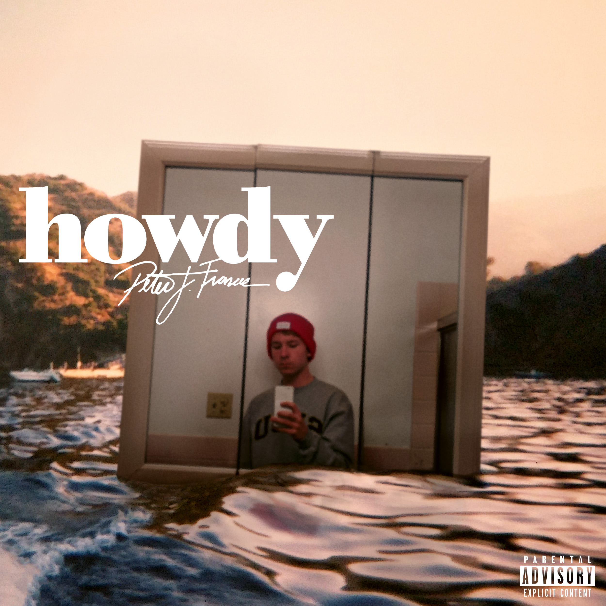
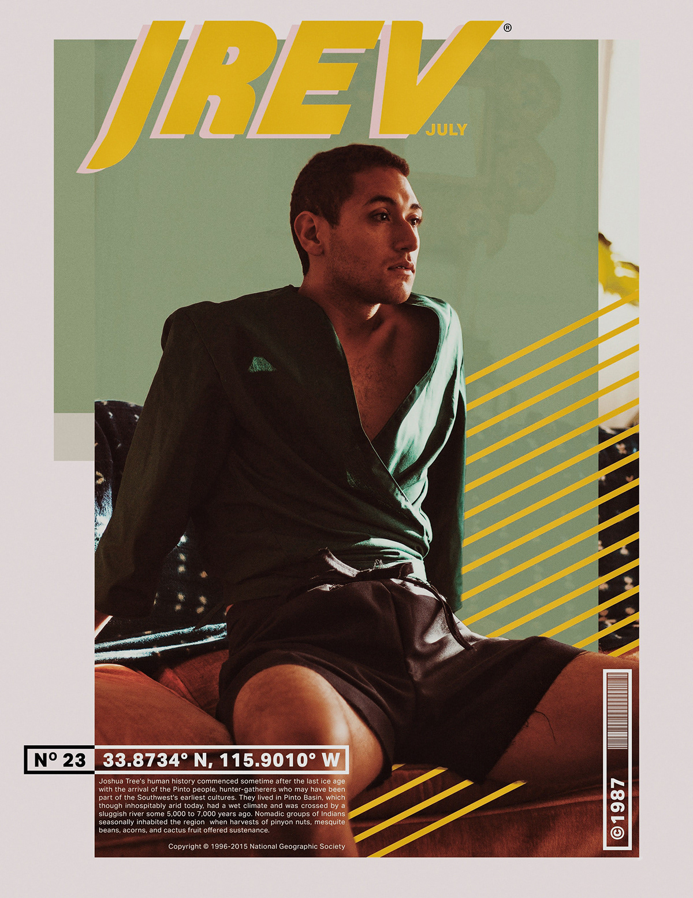
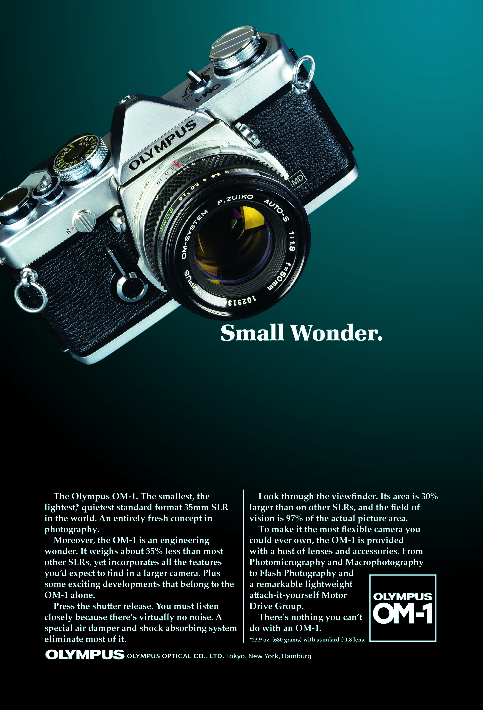
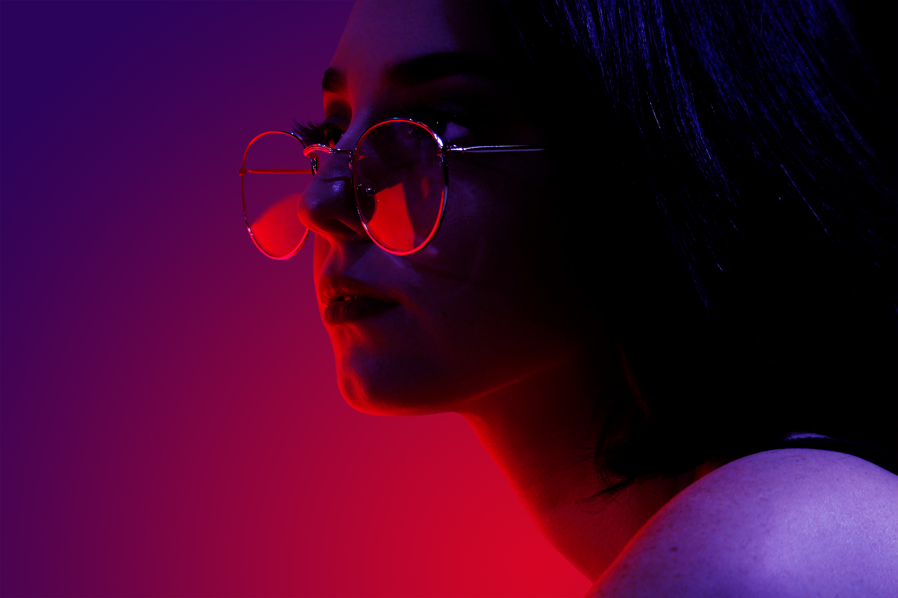
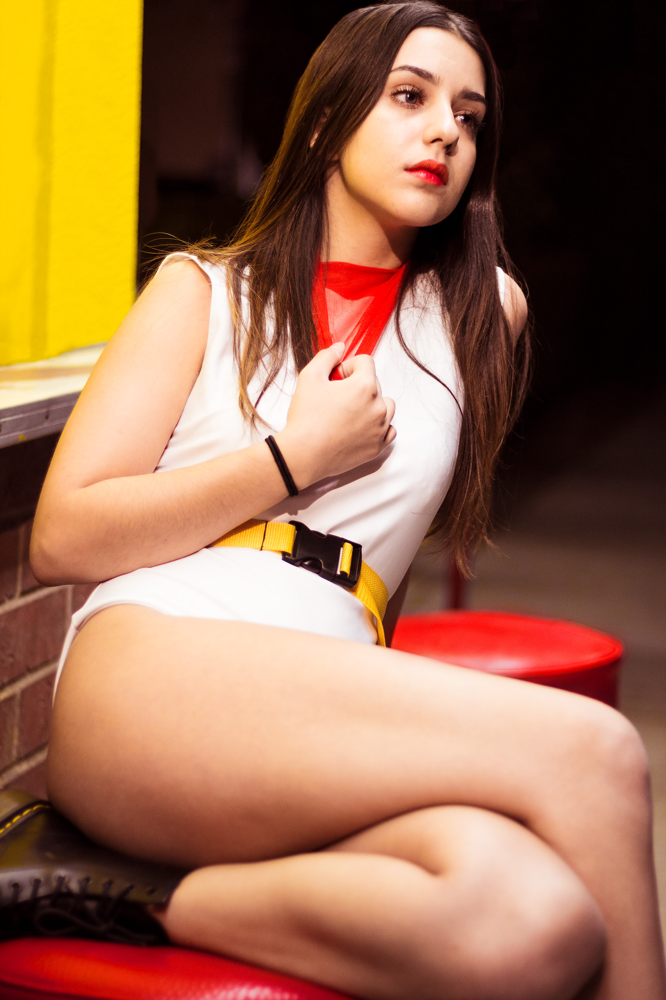
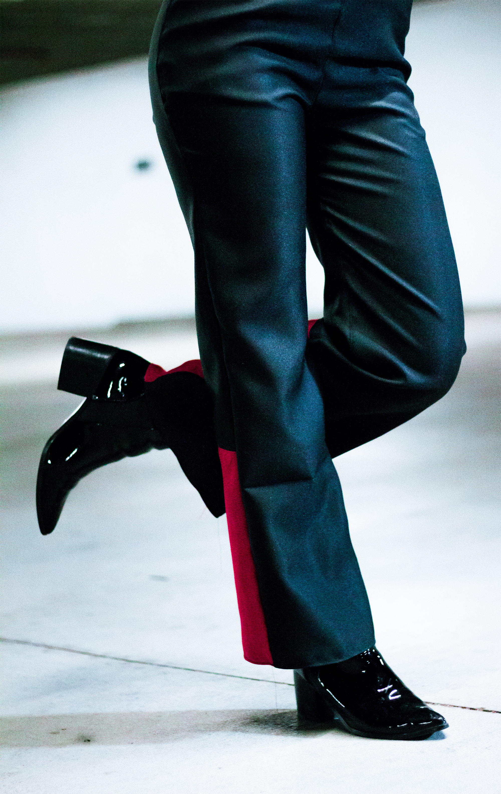

hello again.
When I’m not designing an interface, I've got my hands on a camera and some design tools. Scroll through to read about my design journey and process.

Where I Began
My love for technology and design began with making art like this. This passion now drives my UX design work.

How I Create Imagery
Each piece of digital art is original, meaning every element comes from my trusty camera.

How I Edit Shots
Hand crafted color profiles for each shoot ensure that a client's photos feel coherent and unique.


How I Use These Skills
Creating digital art taught me foundational skills needed to design visually appealing user interfaces.




